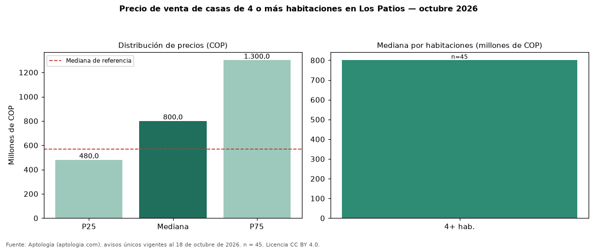

Precio de venta de casas de 4 o más habitaciones en Los Patios — octubre 2026
En Los Patios, la mediana de precio de venta de casas de 4 o más habitaciones es COP 800 millones (n = 45 avisos únicos). Eso es 40 % más que la mediana de casas en Los Patios (COP 570 millones). El rango intercuartílico va de COP 480 millones a COP 1,30 mil millones (razón 2,7). Por metro cuadrado, la mediana es COP 2.857.143/m² (−3 % frente a COP 2.951.389/m²), puesto 4 de 7 ciudades comparables. En el mismo grupo: 2 habitaciones, COP 190 millones; 3 habitaciones, COP 440 millones. El área mediana es 240 m² (referencia: 200 m²). El estrato más frecuente es 3. Datos abiertos CC BY 4.0 de Aptología; fuente y búsqueda de inmuebles: https://www.aptologia.com/venta/los-patios. Archivos: PDF de 2 páginas, CSV con las cifras y gráfica PNG.

| Avisos únicos | 45 |
|---|---|
| Percentil 25 | COP 480.000.000 |
| Mediana | COP 800.000.000 |
| Percentil 75 | COP 1.300.000.000 |
| Mediana por m² | COP 2.857.142 |
Fuente: avisos vigentes de portales inmobiliarios recopilados por Aptología, deduplicados (mínimo 30 avisos únicos por celda). Precios pedidos, no cerrados. Fecha: 2026-10-18.